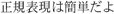

1.2. Regular Expressions as a LanguageUnless you've had some experience with regular expressions, you won't understand the regular expression 1.2.1. The Filename AnalogySince you have decided to use this book, you probably have at least some idea of just what a "regular expression" is. Even if you don't, you are almost certainly already familiar with the basic concept. You know that report.txt is a specific filename, but if you have had any experience with Unix or DOS/Windows, you also know that the pattern "*.txt" can be used to select multiple files. With filename patterns like this (called file globs
or wildcards), a few characters have special meaning. The star means "match anything," and a question mark means "match any one character." So, with the file glob "*.txt," we start with a match-anything Most systems provide a few additional special characters, but, in general, these filename patterns are limited in expressive power. This is not much of a shortcoming because the scope of the problem (to provide convenient ways to specify groups of files) is limited, well, simply to filenames. On the other hand, dealing with general text is a much larger problem. Prose and poetry, program listings, reports, HTML, code tables, word lists... you name it, if a particular need is specific enough, such as "selecting files," you can develop some kind of specialized scheme or tool to help you accomplish it. However, over the years, a generalized pattern language has developed, which is powerful and expressive for a wide variety of uses. Each program implements and uses them differently, but in general, this powerful pattern language and the patterns themselves are called regular expressions. 1.2.2. The Language AnalogyFull regular expressions are composed of two types of characters. The special characters (like the * from the filename analogy) are called metacharacters, while the rest are called literal, or normal text characters. What sets regular expressions apart from filename patterns are the advanced expressive powers that their metacharacters provide. Filename patterns provide limited metacharacters for limited needs, but a regular expression "language" provides rich and expressive metacharacters for advanced uses. It might help to consider regular expressions as their own language, with literal text acting as the words and metacharacters as the grammar. The words are combined with grammar according to a set of rules to create an expression that communicates an idea. In the email example, the expression I used to find lines beginning with 'From:' or 'Subject:' was As with learning any other language, regular expressions might seem intimidating at first. This is why it seems like magic to those with only a superficial understanding, and perhaps completely unapproachable to those who have never seen it at all. But, just as ![
s!<emphasis>([0-9]+(\.[0-9]+){3})</emphasis>!<inet>$1</inet>!
will soon become crystal clear to you, too. This example is from a Perl language script that my editor used to modify a manuscript. The author had mistakenly used the typesetting tag <emphasis> to mark Internet IP addresses (which are sets of periods and numbers that look like 209.204.146.22). The incantation uses Perl's text-substitution command with the regular expression
to replace such tags with the appropriate <inet> tag, while leaving other uses of <emphasis> alone. In later chapters, you'll learn all the details of exactly how this type of incantation is constructed, so you'll be able to apply the techniques to your own needs, with your own application or programming language. 1.2.2.1. The goal of this bookThe chance that you will ever want to replace <emphasis> tags with <inet> tags is small, but it is very likely that you will run into similar "replace this with that" problems. The goal of this book is not to teach solutions to specific problems, but rather to teach you how to think regular expressions so that you will be able to conquer whatever problem you may face. |
 ^(From|Subject):
^(From|Subject): from the last example, but there's nothing magic about it. For that matter, there is nothing magic about magic. The magician merely understands something simple which doesn't
from the last example, but there's nothing magic about it. For that matter, there is nothing magic about magic. The magician merely understands something simple which doesn't  ]
]